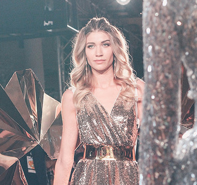

Schwarzkopf Professional объединил всех звезд beauty-индустрии, чтобы устроить грандиозный эвент, посвященный блонду. Самые актуальные тренды этого сезона – макияж, укладки и, конечно, цвет волос – были представлены ведущими топ-стилистами.
Этих колористов знает вся страна – если кому-то не посчастливилось попасть к ним на окрашивание, то есть возможность ежедневно восхищаться их работами в Instagram. Именно там, прежде всего, эти люди снискали себе славу, народную любовь и безоговорочное профессиональное признание.
Павел Шефф @sheffpavelstylist, Виктор Гончаренко @viktor_goncharenko, Ярослав Масленников @yaroslav_maslennikov и Алекс Контье @alexkontier, владелец сети салонов Kontier Paris в Москве. Это профессионалы, которым доверяют свой блонд редакторы ведущих глянцевых журналов, топ-блогеры и такие звездные блондинки, как Вера Брежнева, Елена Кулецкая, Татьяна Котова, Наталья Давыдова, Екатерина Варнава. Впервые, объединившись под самым главным брендом для блондинок – BlondMe от Schwarzkopf Professional – они представили свои коллекции блонд сразу в двух городах – Москве (в loft-комплексе SHELK) и Санкт-Петербурге (в Манеже Кадетского корпуса).
 Также к звёздному составу хэдлайнеров присоединились арт-команды известных в России сетей салонов – Kawaicat и Chicago. Специально приглашенными гостями показа стали международный амбассадор Schwarzkopf Professional, британский стилист Лесли Дженнисон и топ-визажист Сердар Камбаров, которые также представили зрителям свою яркую коллекцию блонд.
Показ состоял из нескольких тематических блоков – каждый хэдлайнер показал свое видение идеальной блондинки. Какая она? Женственная и романтичная, современная городская принцесса или дерзкая и независимая? Все тренды блонд – холодные, как сталь, или теплые, медово-карамельные оттенки, яркие цветные пряди или нежные пастельные тона. 100 восхитительных и таких разных блондинок – на одном подиуме!
И так дважды – в Москве и Санкт-Петербурге.
Более 1600 зрителей наблюдало эти роскошные дефиле. В числе гостей – топ-стилисты всех ведущих парикмахерских брендов, редакторы глянцевых и digital-изданий, лучшие представители бьюти- и фэшн-тусовки Москвы и Санкт-Петербурга – фотографы, визажисты, дизайнеры. И, конечно, люди, без которых сегодня не обходится ни один показ, - блогеры, разумеется, блондинки – Саша Буримова @burimova, Валерия Долгова @valerydolgova, Дарья Костромитина @dashakos, Лиля Браун @lilyabraun, Снежана Янченко @y.mind и многие другие.
Мероприятие получило огромный резонанс в социальных сетях – общий digital-охват по хештегу #TheBlondEvent в Instagram составил 7 500 000 контактов.